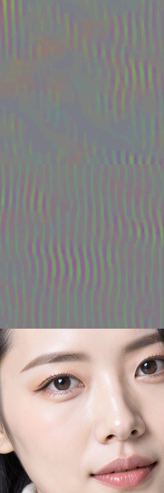
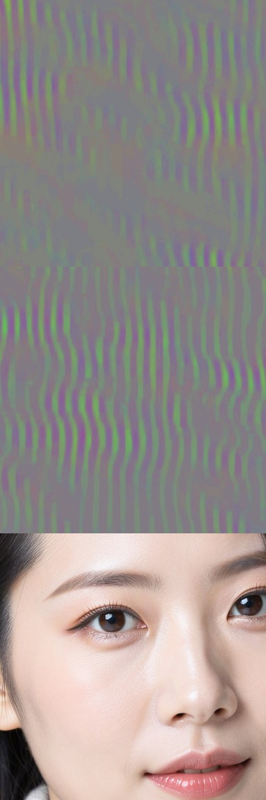
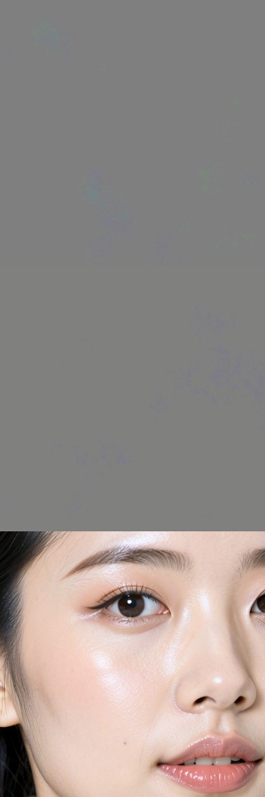
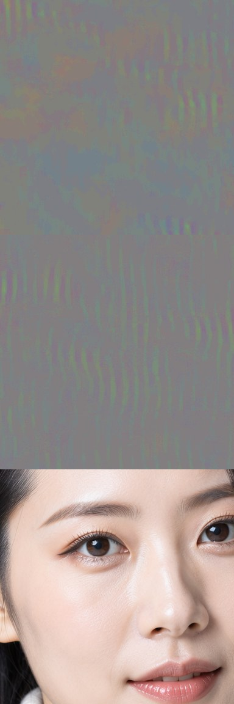
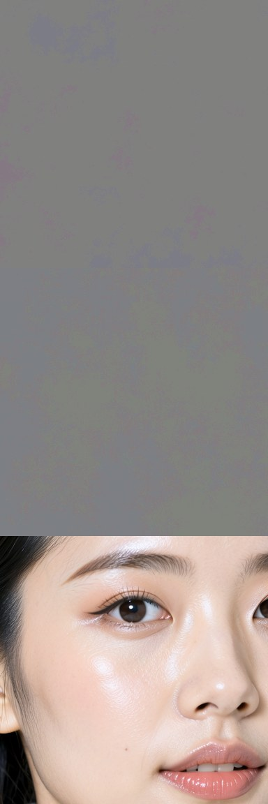
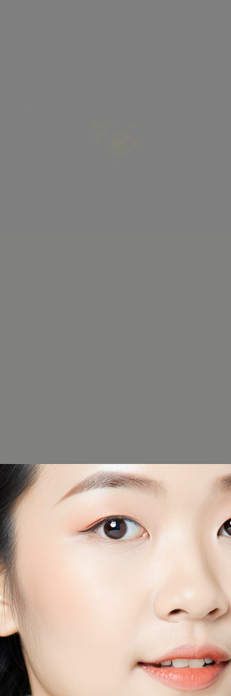

Fixing the vertical colour stripes in MOSS-Image SFT: three approaches and what each teaches
Local research notes, updated 2026-10-19 22:50. Numbers come live from our screen (output/moss/drift/scores.jsonl). Image comparisons: compare page. Inside-the-model charts: edit anatomy. Nothing here is published yet.
- MOSS-Image SFT paints faint, colour-only vertical stripes (about 48 cycles across the image, whatever the size) into smooth areas. Base doesn't.
- There are three ways to undo part of SFT's training: copy Base's weights back into some layers (our published DeBand), solve for the smallest weight change that makes layers act like Base on stripe-prone inputs (our unpublished Gram solve), or score every direction of SFT's change by how much it feeds the stripe and remove the worst (nynxz's Destripe).
- The deciding question is how you choose what to undo. Choosing by layer is crude. Choosing by "what the layer sees on solid colours" is better. Choosing by "what actually makes the stripe, measured through the real sampling process" is the most precise, which is why nynxz's 1.9 MB edit can stay ~99% identical to SFT.
- Measured on our screen: nynxz's LoRA is the gentlest (faces stay 0.94–0.96 similar to SFT) but only partly cleans solids (about −4 dB; Base is about −16). Our best solve cleans more (−7 to −19 dB) but moves faces (0.83 on our preset, 0.62 at their sampler settings).
- The same choice decides how well character-LoRA cleanup works (DeTangle). In the space-station and wizard-workshop cases, surgery hands the face back to the base model's own default for the scene (0.75 / 0.66 face match with Base, vs 0.04–0.36 elsewhere): input statistics can't separate the identity from a context that uses the same directions.
1. The problem
The stripes are a colour shift with almost no brightness change, so they're hard to see until you boost colour (the "colour view" below amplifies colour differences 8×). What we've pinned down:
- Fixed count, not a fixed size. About 45–65 cycles across the width at every resolution and aspect ratio. Rescaling the model's horizontal position encoding moves the count (×0.8 → 64 cycles, ×1.25 → 40), so it's tied to the position-encoding span, not to the VAE or a pixel period.
- It's mostly a damping failure. The ER-SDE sampler re-injects noise every step, and SFT fails to clean up that band of it. Lowering the sampler noise nearly removes the stripes but washes images out (not a fix). CFG amplifies them.
- It forms mid-sampling and lives in the late-middle layers. Reverting layers 37–41 removes most of it at 768 px. nynxz's gradients put the causes in layers 24–41, mostly the MLP's
ffn_up_gate.
2. Three ways to undo part of SFT
All three start from the same object: Δ = WBase − WSFT, the change fine-tuning made to each weight matrix. A fix adds some piece D of Δ back. The methods differ in how they pick D.
Block revert DeBand, published
D = Δ for chosen layers, 0 elsewhere. "Make layers 37–41 exactly Base."
Picks by: location only.
Good: simple, exact, easy to ship as a LoRA. Bad: undoes everything SFT learned in those layers, stripe-related or not. Leaves residue at 1024 px and wide images.
Gram solve ours, unpublished
G = statistics of what each layer actually receives while SFT draws solid colours. The solve makes the layer act like Base on those inputs and stay SFT elsewhere. μ protects the fine detail of general prompts; ε (set by ρ) controls how narrow the edit is.
Picks by: input statistics. Bad: it undoes everything those inputs touch, including things unrelated to stripes, so faces still drift.
Gradient-picked directions nynxz Destripe
Split each layer's Δ into rank-1 directions (SVD). One backward pass scores every direction by how much it increases the 48-cycle stripe energy in the model's predicted image, during steps 4–13 of real sampling. Subtract the 64 highest scorers.
Picks by: measured effect on the stripe itself. Good: tiny (25 matrices of rank 1–7) and causal (the same directions at negative strength make the stripes 20× worse).
The lesson that transfers: score candidate edits by the behaviour you want to change, through the real computation, not by where they are or what inputs they see. Location and input statistics are proxies; gradients through sampling measure the thing itself.
3. Head to head on our screen
Solids: orientation-free colour-detail power vs SFT, in dB, over grey/blue/beige × up to 3 seeds (lower = cleaner; Base ≈ −16 median). It catches stripes rotated into diagonals, which the vertical-only stripe score misses. Faces: ArcFace identity similarity to SFT's face for the same prompt and seed (1.0 = same person). DINO / SSIM: overall drift from SFT on non-solid images. Single images swing 10–30 dB because a solid tends to come out either fully clean or still striped, so read the median and the worst case, not just the mean.
| Fix | Family | Status | Solids median dB | mean | worst | ArcFace | min | DINO dist | SSIM | n solids |
|---|---|---|---|---|---|---|---|---|---|---|
| SFT, no fix | reference | — | +0.0 | +0.0 | +0.0 | 1.00 | 1.00 | 0.000 | 1.00 | |
| MOSS-Image Base | reference | — | −16.6 | −28.6 | −10.4 | 0.45 | 0.28 | 0.150 | 0.58 | 9 |
| DeBand LoRA: Base weights in layers 37–41 | block revert | published (HF/Civitai) | +0.4 | −0.0 | +2.3 | 0.91 | 0.72 | 0.042 | 0.86 | 9 |
| DeBand Quality+: Base weights in 32–41 | block revert | published | −3.0 | −3.2 | +1.3 | 0.85 | 0.67 | 0.067 | 0.73 | 9 |
| Kijai rank-512 LoRA @ −1 | compressed revert | third party | −5.8 | −6.0 | −1.3 | 0.76 | 0.59 | 0.080 | 0.69 | 9 |
| Gram solve ρ=0.1, layers 21–41 | closed-form solve | unpublished | −6.6 | −13.6 | −3.8 | 0.72 | 0.50 | 0.091 | 0.66 | 9 |
| Gram solve ρ=0.05 + protect general detail μ=0.3 | closed-form solve | unpublished | −6.9 | −18.8 | −2.8 | 0.83 | 0.66 | 0.059 | 0.71 | 9 |
| Gram solve ρ=0.1 + μ=0.3, strength 1.2 | closed-form solve | unpublished | −10.0 | −10.7 | −5.1 | 0.80 | 0.67 | 0.077 | 0.68 | 9 |
| nynxz Destripe @1.0 (64 directions) | gradient-picked directions | third party | −3.2 | −3.5 | −1.9 | 0.94 | 0.78 | 0.028 | 0.93 | 9 |
| nynxz Destripe @1.5 | gradient-picked directions | third party | −3.9 | −4.4 | −1.8 | 0.94 | 0.71 | 0.031 | 0.92 | 9 |
| nynxz @1.5 stacked on our μ=0.3 ρ=0.05 solve | combination | unpublished | −6.9 | −7.1 | −3.1 | 0.82 | 0.65 | 0.071 | 0.71 | 9 |
| Trained de-band LoRA, 600 steps | training | unpublished (failed) | −3.1 | −2.6 | +5.2 | 0.12 | 0.03 | 0.363 | 0.56 | 9 |
| nynxz @1.5 at their settings (CFG 2.5, no SLG/TSR; vs SFT at same settings) | gradient-picked directions | third party | −4.6 | −4.6 | −3.0 | 0.96 | 0.92 | 0.006 | 0.97 | 9 |
| Our μ=0.3 ρ=0.05 solve at their settings (vs SFT at same settings) | closed-form solve | unpublished | −5.6 | −7.6 | −2.6 | 0.62 | 0.28 | 0.035 | 0.83 | 9 |
Colour view of a beige and a grey solid (centre crops; average colour and brightness removed, remaining colour variation boosted 12×; stripes show as vertical bands), plus the portrait crop, for the same seeds:






- nynxz's LoRA barely changes anything else. ArcFace 0.94–0.96 to SFT's face, SSIM 0.93, DINO 0.03: by far the least drift of any fix, on both our preset and theirs.
- It only partly removes the stripes on solids. About −3 to −4.6 dB on our orientation-free measure (Base ≈ −16), and in the colour view the stripes are fainter but still visible. Its effect on the vertical-only score is larger (bench 2.27 → 1.23), which fits a fix chosen by a vertical 48-cycle stripe energy.
- Our solves remove more but move more. μ=0.3 ρ=0.05 gets solids to −7 to −19 dB depending on the statistic, with faces at 0.83 on our preset.
- Our solve is sampler-sensitive; theirs isn't. At their settings (CFG 2.5, no SLG/TSR) our solve's faces fall to 0.62 (minimum 0.28), while theirs stays at 0.96. Our activation statistics were recorded under our preset, so the edit is tuned to that sampling path.
- Stacking theirs on ours adds nothing. Drift and cleanup are set by our solve (−6.9 dB median, faces 0.82).
- Takeaway: theirs is the safe, near-invisible improvement; ours is the stronger cleanup on the preset it was fitted for. Neither reaches Base on solids. The obvious next step is their selection method with a stronger, orientation-free objective, so it picks more directions only where they matter.
4. What we found that isn't published yet
About measuring
- Vertical-only stripe scores can be fooled. Several of our solves rotated the stripe into short diagonals and scored "clean". An orientation-free colour-detail measure on solids caught it. nynxz's numbers use a vertical-only score, so we re-measured their LoRA ourselves (table above).
- Solids are all-or-nothing. One grey can go from striped to perfectly flat (−45 to −70 dB) while another seed barely changes. Means get dragged around by the clean ones. Report median, mean and worst case together.
- Measure output change on the part that matters. In each layer about half the input energy is one direction: each token's overall colour/brightness plus the timestep modulation. Any edit touching it looks "big". Measuring on horizontal detail only showed that Kijai's LoRA isn't selective (83% effect on solid inputs vs 79% on general) while our solve is (92% vs 75%).
About the closed-form solve
- It's genuinely selective. A plain 55% revert of the same layers (about as big an edit) only reaches −5.6 dB at the same face drift.
- Protect detail, not everything. Protecting general prompts' full statistics kills the fix, because the colour/brightness direction is shared. Protecting only their horizontal detail (μ=0.3) keeps most of the cleanup and lifts face similarity from 0.72 to 0.83.
- The colour/brightness part carries most of the fix. Targeting only horizontal detail does nothing for stripes. Targeting only the colour/brightness part (plus text tokens) gets about −5 dB with faces at 0.86. With a shared denominator the two parts add up exactly to the full solve; the extra image-level effect of using both comes from the nonlinear sampling, not from the weights.
- It needs layers 21–41 together, over the early and middle steps. Either half alone gives −3 to −5 dB. Applying it only in steps 13–25 does nothing.
About training (overnight experiment)
- Teaching "clean solids" generalised to "remove detail". A rank-32 LoRA trained on clean solid renders plus SFT's own general renders did nothing at 200 steps and wrecked images at 600 (blurry, painterly, colour-shifted, ArcFace 0.12). A closed-form repair on top couldn't rescue it.
- MOSS training in ComfyUI works after a one-line dtype fix in the training path, with the memory compiler off and per-block gradient checkpointing (
checkpoint_depth=2: 13.6 GB at 1024², 1.26 s/step).
5. Why this matters beyond MOSS: character LoRAs (DeTangle)
DeTangle asks the same question about a character LoRA: keep the character when triggered, change nothing when not. Its "A-side surgery" re-fits one LoRA factor from captured activations (match triggered prompts, stay near zero on generic ones, with a ridge), the same family as our Gram solve. It also has the same weakness: it picks by what inputs look like, not by what the edit does to the image.
Checked (2026-10-19, existing renders, ArcFace between each triggered render and Base's render of the same prompt and seed): after A-side surgery at strength 1, the face matches Base's own face at 0.75 on space station and 0.66 on wizard workshop, against 0.04–0.36 in the other six contexts. At 1.25: 0.72 and 0.56 vs 0.00–0.21. The original LoRA's faces sit at only 0.11–0.24 from Base's. So in exactly the two contexts where likeness collapses, the surgery doesn't just weaken the character; it hands the face back to the base model's default for that scene. That is entanglement in the literal sense: in that context the identity signal and the context signal share input directions, so an input-statistics edit can't separate them. The stubborn blue solid in MOSS is a smaller version of the same thing.
delta-surgery/runs/2026-10-19-entanglement-probes/RESULTS.md):- Where: only blocks 8–15 matter. Swapping the original LoRA back into just blocks 8–11 or 12–15 restores likeness (0.36–0.55); every other window, including blocks 0–3, does nothing.
- Entangled: those same blocks bring the bleed back (+0.19 to +0.30 generic excess). The parts that let the character beat a strong scene prior are the parts that leak her into untriggered prompts.
- Context: the "science-fiction film still" sentence is a real but partial cause. Adding it to arcade or beach cuts post-surgery likeness by 0.15–0.26 while the original LoRA doesn't care; stripping all scene-specific phrasing recovers 0.58 at strength 1.25.
- Sigourney: the fallback face is a consistent lookalike of a blend of space-film actresses, not one person. Against the model's own concepts of 19 actresses (studio portraits by name; different actresses sit 0.03–0.38 apart, an actress's own renders 0.75+), it is closest to Rebecca Ferguson 0.42, Noomi Rapace 0.36, Kate Winslet 0.34 and Sigourney Weaver 0.32. The model's generic woman leans Ferguson everywhere; the sci-fi film-still scene adds Rapace, Weaver and Linda Hamilton. Surgery returns that inherited prior.
- Weak trigger: after surgery the trigger loses to any explicitly described identity (named actress: likeness ≈0; ethnicity descriptors: 0.01–0.31).
nynxz's method suggests the fix: score LoRA directions by their effect on the outcomes you care about (likeness when triggered, identity bleed when not), measured through sampling in each context, and keep or drop directions on that basis.
6. Research tracks (proposed, not run)
- Gradient-scored MOSS fix with our metric. Reproduce the direction scoring, but score against the orientation-free colour-detail energy and include the residue our solves leave (blue solids, 1024 px). Then try a hybrid: gradient-chosen subspace plus μ-protected least squares within it.
- Is the space-station face the Base prior? Done, yes (see section 5): 0.75 face similarity to Base's own render in space station, 0.66 in wizard workshop, 0.04–0.36 elsewhere. Next: render Base with only the context ("a woman on a space station", no trigger) across seeds to see how consistent that default face is.
- Predict per-context failure. For each of the 8 cases, measure how much of the triggered activations lies in the directions the surgery suppresses, and check whether it predicts the likeness loss (A-side at 1.25: space station 0.12, wizard workshop 0.28, other cases much higher).
- Find the entangled words. Remove or swap context words ("space station", "astronaut", "corridor") with the trigger kept and see which ones flip the identity. That locates the competing prior in the text conditioning.
- Gradient-scored character surgery. SVD the LoRA's B·A per layer; score each direction by the gradient of likeness (triggered) and identity excess (generic) through the 8-step sampler, per context; keep directions that help likeness everywhere and drop those that drive bleed.
- Gentler training with these signals. Low learning rate, more preserve data, checkpoints every 100 steps, plus a stripe-energy or bleed loss computed the way nynxz scores directions, instead of plain denoising loss on clean images.
Glossary
Δ (delta): Base weights minus SFT weights for a layer. LoRA: a small add-on weight change; "extracted" means computed from existing weights rather than trained. SVD direction: one rank-1 piece of a weight change; any matrix is a sum of these. Gram matrix G: the average outer product of a layer's inputs, i.e. which input directions occur and how strongly. ρ, ε: ridge strength; larger means a narrower, more SFT-like edit. μ: how strongly general-prompt detail is protected. HF colour power (dB): colour detail at periods under 40 px in a solid image, relative to SFT; −10 dB is 10× less. ArcFace: face-identity similarity (1.0 = same person). DINO distance: overall image-content difference.